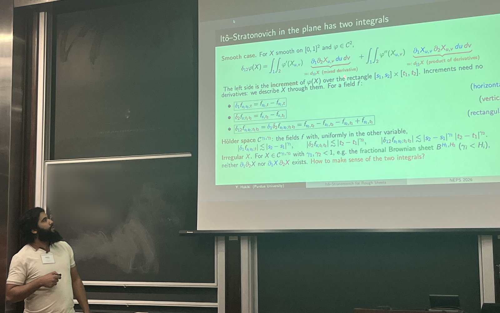

I am a Golomb Visiting Assistant Professor in the Department of Mathematics at Purdue University. I hold a Ph.D. in Probability Theory (July 2024) from the Faculty of Sciences at Cadi Ayyad University, Morocco, supervised by Professor Mohamed Erraoui. Before my Ph.D., I received a Master’s degree in Probability and Statistics (2018) from the same faculty, and before that a Bachelor’s degree in Mathematics (2016) from the Faculty of Science and Technology at Cadi Ayyad University. I obtained my high school diploma (2013) from Abi Abbas Essabti High School in Marrakech.
My research lies in probability theory, at the interface of rough path theory, the sample path properties of Gaussian random fields, and stochastic partial differential equations (SPDEs). I am currently developing a rigorous integration theory for “rough sheets” — functions indexed by the plane — and using it to study singular SPDEs such as the stochastic wave equation. A second line of my work studies when Gaussian random fields can hit a fixed point, with a focus on the delicate critical dimension. Read more on the research page.
Sample path properties of random fields · rough path theory · stochastic PDEs · fractional Brownian motion & sheets · Gaussian processes · Hausdorff dimension & hitting probabilities · polarity of points · regularity structures